In the left menu, open Product Testing. The page shows charts of job status, service provider and test results, and the list of all jobs. Click Create Job above the list.
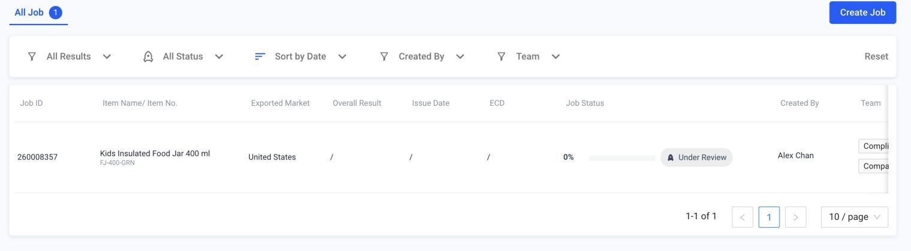
Product Testing list — Create Job is at the top right of the job list.
2. Product Info — select products
The Request Quotations wizard opens. Add the products for this testing order:
+ Existing Products picks from your Product Management list.
+ Add Products creates a new product here.
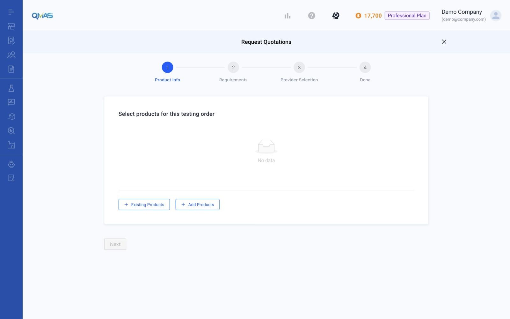
Step 1 starts empty. Next stays disabled until a product is added.
In the Select Product(s) pop-up, search by product name or ID, click Select on each product you need, then click Confirm. You can select more than one product.
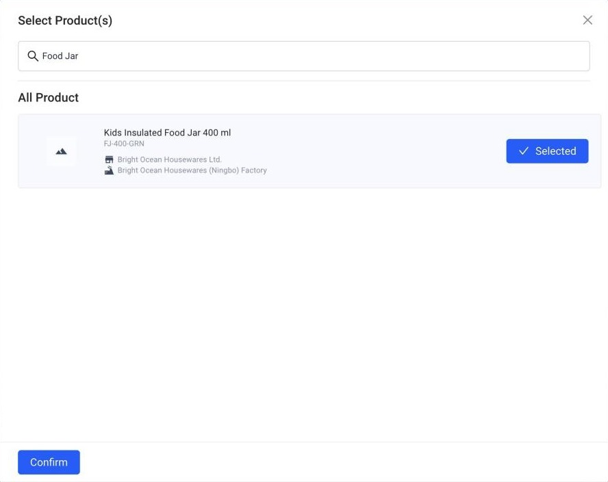
A selected product shows a blue “✓ Selected” button.
Check the product details. You can change Item name on report and Item no. on report, which are printed on the test report. Click Add PO Information to link a purchase order (optional). Then click Next.
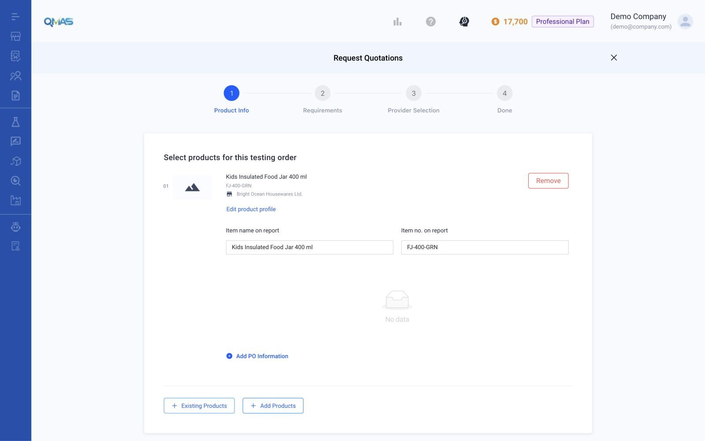
Use Remove to drop a product, or Edit product profile to update it.
3. Requirements
1. Test Requirements
Export Market — where the product will be sold (required).
Test Item (optional) — choose a country, then search for test items or citations.
Quality Requirement — Create New Requirements, Add Existing Requirements, or Import Requirement Template.
Remarks and Attachment (optional) — special instructions and reference files.
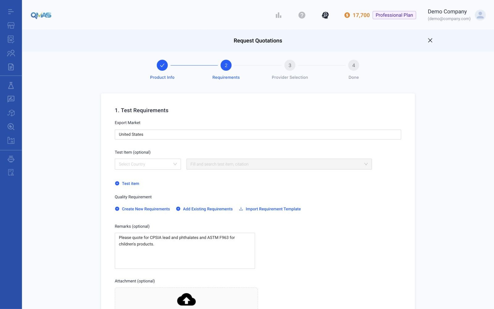
Export Market filled in.
2. Additional Information
Service Level — Regular, Express or Shuttle / Emergency.
Country of Origin — where the product is made (you can pick more than one).
Intended Usage — General product, Adult product, Children product or Toys.
Buyer Name (optional).
When all required fields are filled, Next turns blue. Click it.
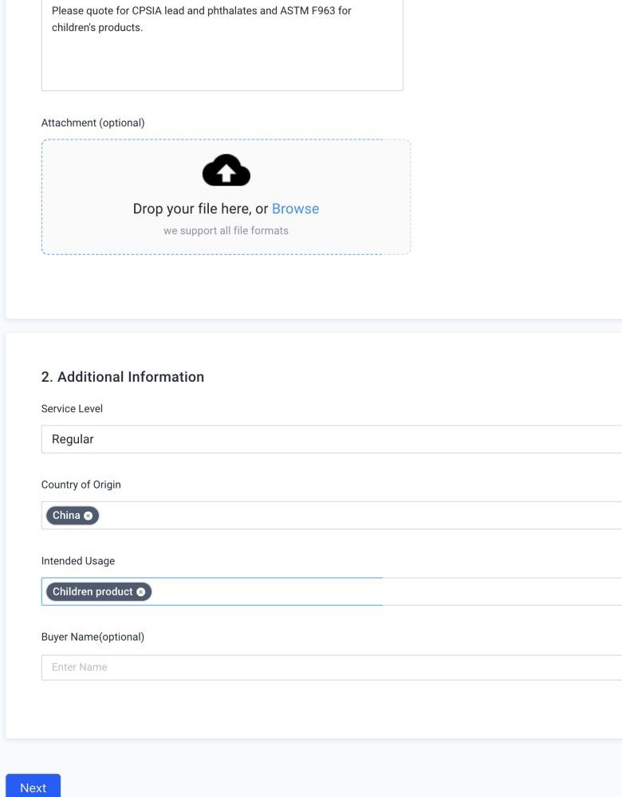
Additional Information filled — Next is now enabled.
4. Provider Selection
Choose who should quote this job. You can tick more than one:
Option
Use it when
Connected Provider
You already work with a lab that is connected to your QMAS account.
ICW
You want ICW to find a lab. Pick a preferred lab, or leave “No Preference”.
TicMart (Marketplace)
You want quotations from labs in the TicMart marketplace.
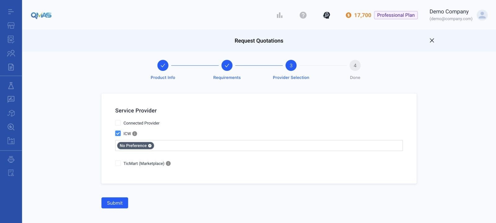
ICW ticked with “No Preference”. Click Submit to send the request.
5. Done — track your order
After you click Submit, QMAS shows “Product testing created successfully” and opens the Order details page. Your job has a new order number (for example 260008357) and starts as Under Review.
Product Testing Requirements, Products, Supplier, PO and Test Plan tabs show what you submitted.
Quotations on the right shows lab quotes when they arrive.
The tabs below (Quotes, Failure Records, Reports, Attachments, Invoices, Tag, Activity Log, Message Board) follow the job until the report is ready.
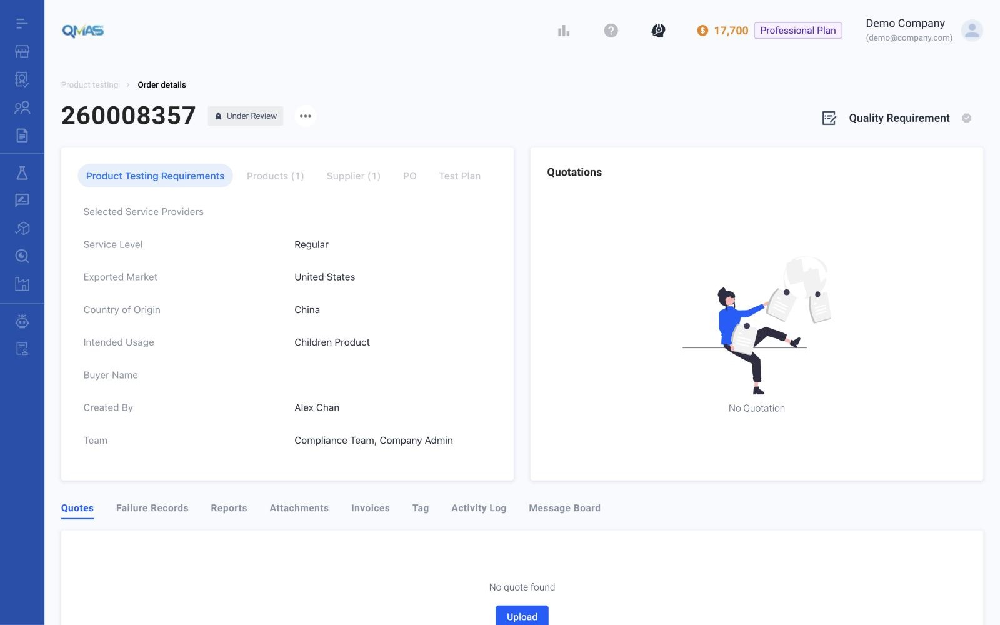
The new order opens with status Under Review. You can find it again in the Product Testing list.
Tips
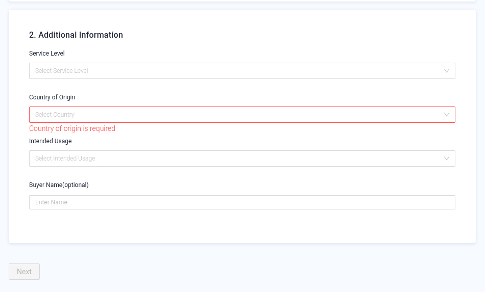
Required field left empty.
Getting Started — Home, Settings and Company Profile
Find your way around QMAS: the Home page, the top bar and your company settings.
Overview
Home shows quick workflows, items that need your attention, and an overview of your business.
The left menu opens each module.
The top bar has analytics, messages, notifications, the account avatar, help and credits.
Settings opens from the avatar (account control) in the top bar. The menu includes Company Profile, Password, Languages, Account Management, Assign TicMart Job and Logout.
CPSC eFiling. If it shows “API Setup Required”, set up your Certifier ID in Company Profile first.
Request product testing with your lab partner (Product Testing).
Request technical files from your supplier/factory (Document Review).
Attention counts the items that need action in each module, such as Product Testing, Document Review, QC Inspection, IQC Inspection, Factory Audit, Pending Review Doc and Expired Doc. Click a card to see them.
Business Overview shows your active products, suppliers, factories and partners. Click › to open the list.
Ask TicMate on the right edge opens the TicMate assistant.
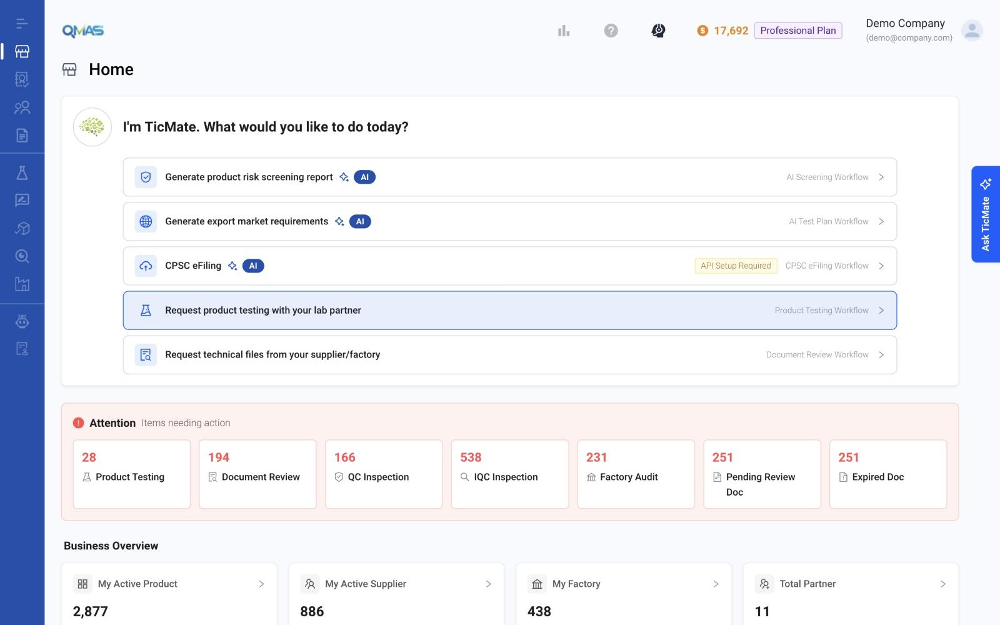
Home page.
2. Settings menu
Click your avatar (account control) in the top bar:
Option
What it does
Company Profile
Company details, certificates, documents, product categories and CPSC eFiling Certifier ID.
Password
Change your password.
Languages
Change the system language.
Account Management
Manage your company's user accounts.
Assign TicMart Job
Assign jobs from the TicMart marketplace.
Logout
Signs you out of QMAS.
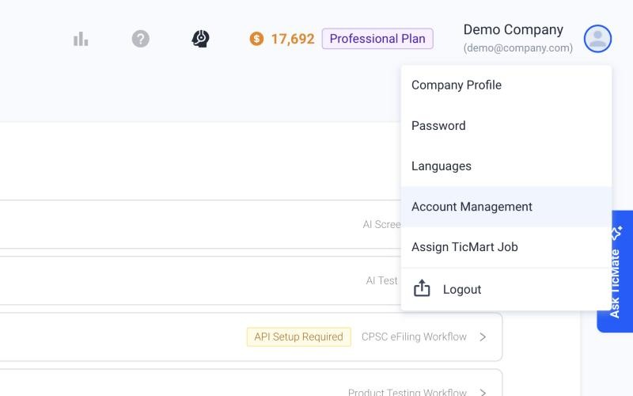
Settings menu.
3. Company Profile
Click the pencil icon next to the company name to edit it. The Overview, Certificate and Document tabs hold your company information. CPSC eFiling - Certifier ID is where you add and manage the API key for eFiling. Product Category lists the categories your company works with.
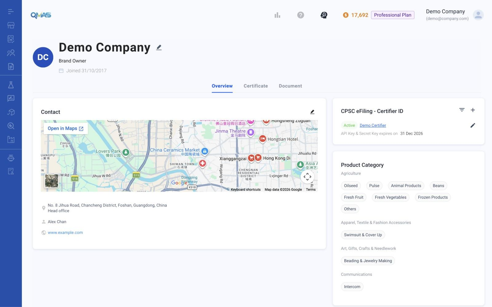
Company Profile.
Tips
FAQ
How do I change the language?
Click your avatar (account control) in the top bar, then Languages.
How do I change my password?
Click your avatar (account control) in the top bar, then Password.
In the left menu, open Product Management. Click + New Product at the top right. To add many products at once, use Import Product.
Filter the list with Product Category, Customer Product Category, Product Number, Status, Created By and Team. Sort by Date modified changes the order. Reset clears the filters.
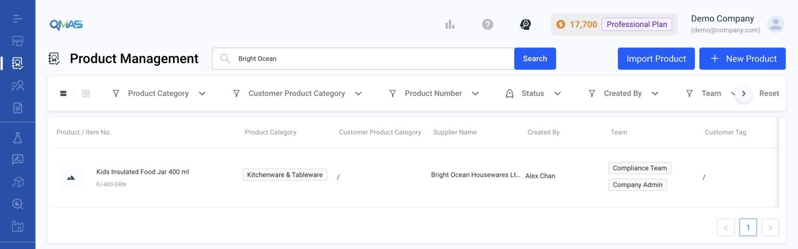
Product Management list with Import Product and + New Product at the top right.
2. Product Profile — product details
The Add new product wizard opens. Under 1. Product Details, fill in:
Item No. and Product Name (required).
Long Descriptions (optional): purpose, materials and internal parts such as batteries or stuffing.
Additional Item No. (optional).
Product Category (QMAS): click Select Category.
Customer Tag, Customer Product Category (Level 1–3) and Remark (optional).
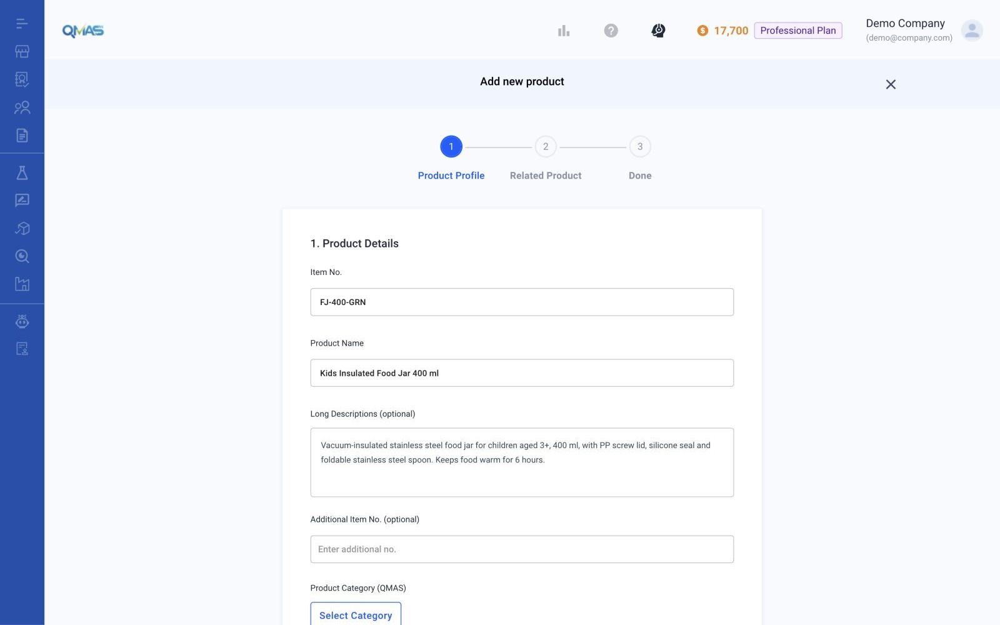
Step 1 Product Profile — Product Details.
In Select Category, search by name (for example “drinkware”), click the category, then click Add category.
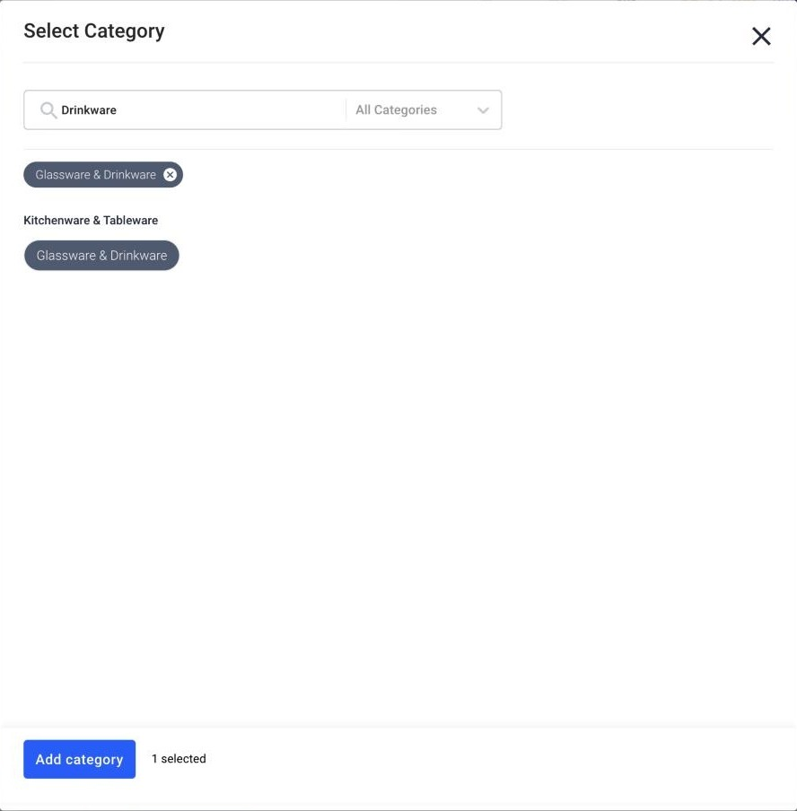
Selected categories show as dark chips at the top. “1 selected” appears next to Add category.
3. Product Profile — supplier
Under 2. Supplier, choose My supplier list and click Select supplier, or choose New supplier to add one here.
In the pop-up, click Select on one supplier, then Confirm.
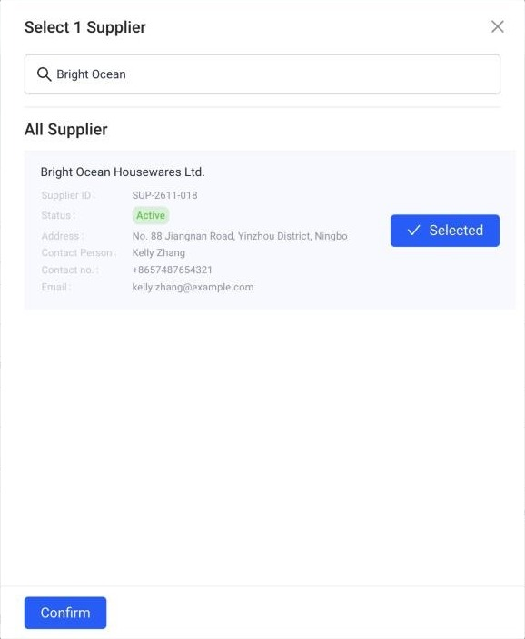
Select 1 Supplier — you can link one supplier per product.
The supplier card appears. Use Change Supplier to pick another one, or Edit this profile to update the supplier.
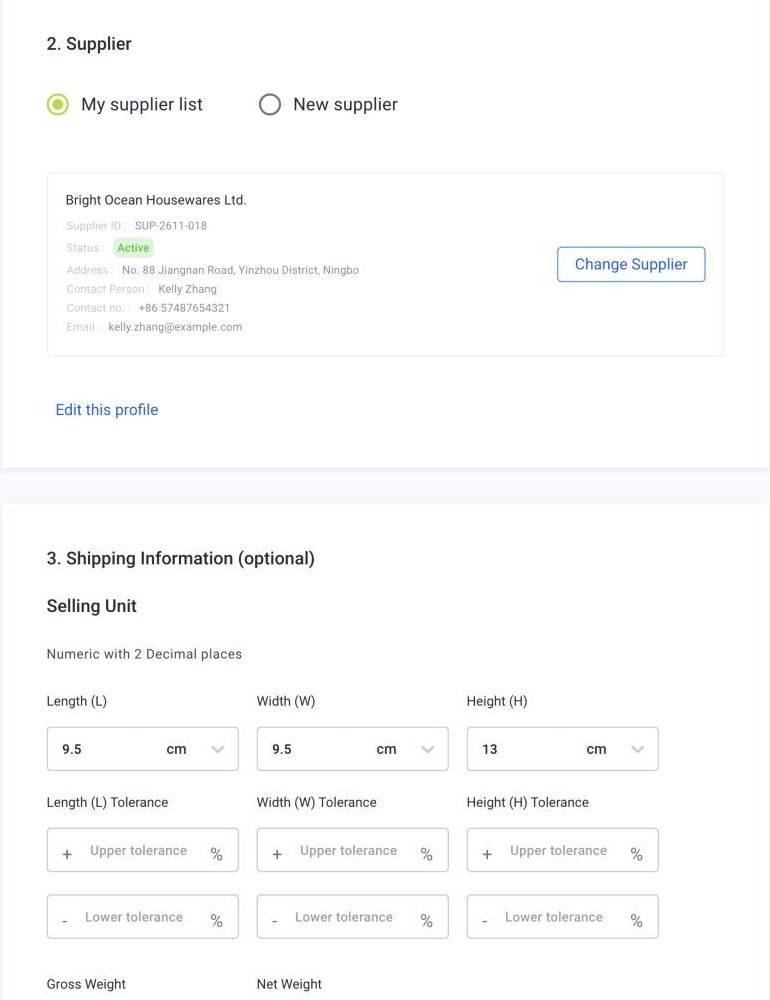
Selected supplier, followed by 3. Shipping Information (optional).
4. Product Profile — optional sections
Shipping Information: size, weight, tolerance and barcode for the selling unit, inner carton and outer carton.
Factory: click Select existing factory.
Additional Info: choose a Buyer (or Add buyer) and upload up to 30 product photos (JPG, JPEG, PNG).
Click Next.
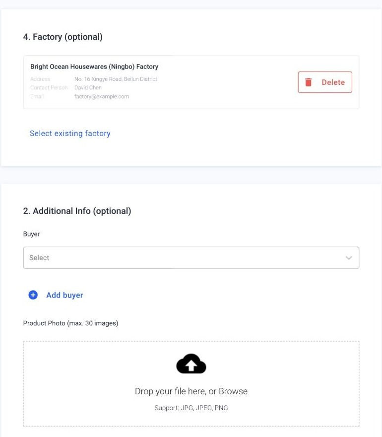
Factory and Additional Info at the bottom of step 1, then Next.
5. Related Product (optional)
Product linkage helps you manage compliance reports. For example, link a raw material or an assortment to several end products. Click Select related product, or skip this step. Click Done. Unlink removes a product from this step.
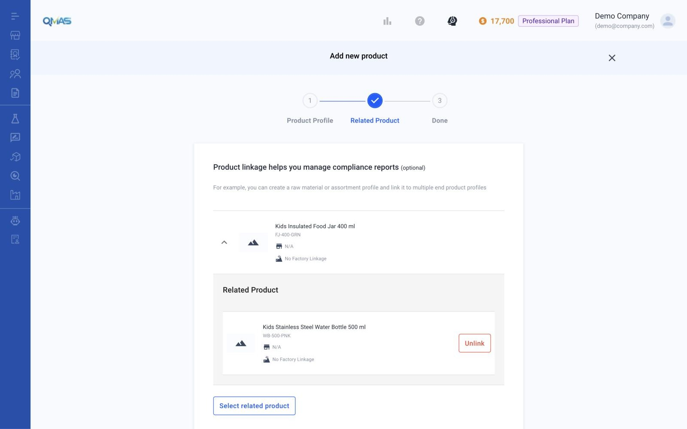
Step 2 Related Product.
6. Done — find your product
QMAS shows “Product added” and returns to the Product Management list. The new product is at the top.
Click the product to open its profile. From the left menu of the profile you can manage Document, Shipping Detail, Compliance Data, Quality Requirement, AI Risk Screening, CPSC eFiling and Packaging Detail.
The left menu also includes QR Code.
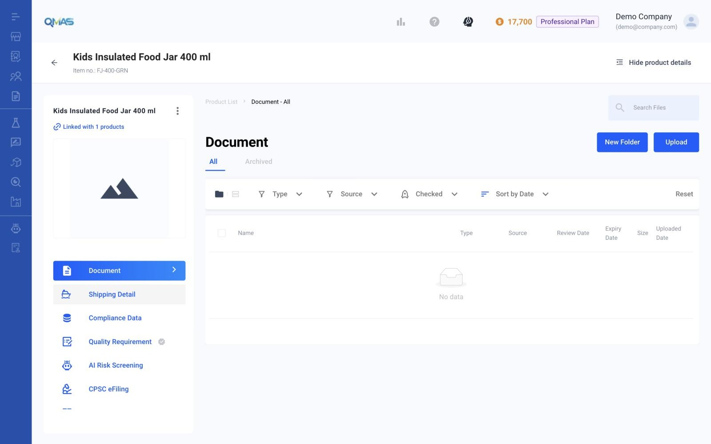
Product profile.
7. Edit, copy or deactivate a product
On the product profile, click ⋮ next to the product name:
Option
What it does
Edit product
Opens the same wizard with your saved details. Change them, then click Next and Done.
Testing order
Starts a Product Testing order for this product.
Make a copy
Creates a new product with the same details.
Mark as inactive
Sets the product to inactive.
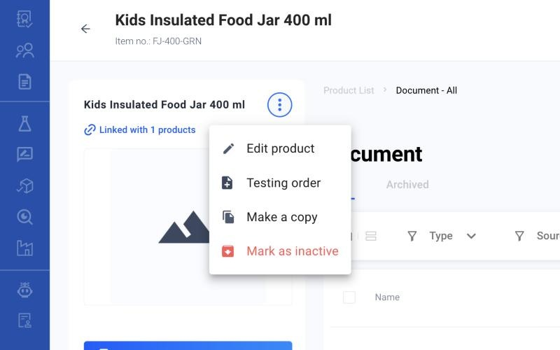
The ⋮ menu on the product profile.
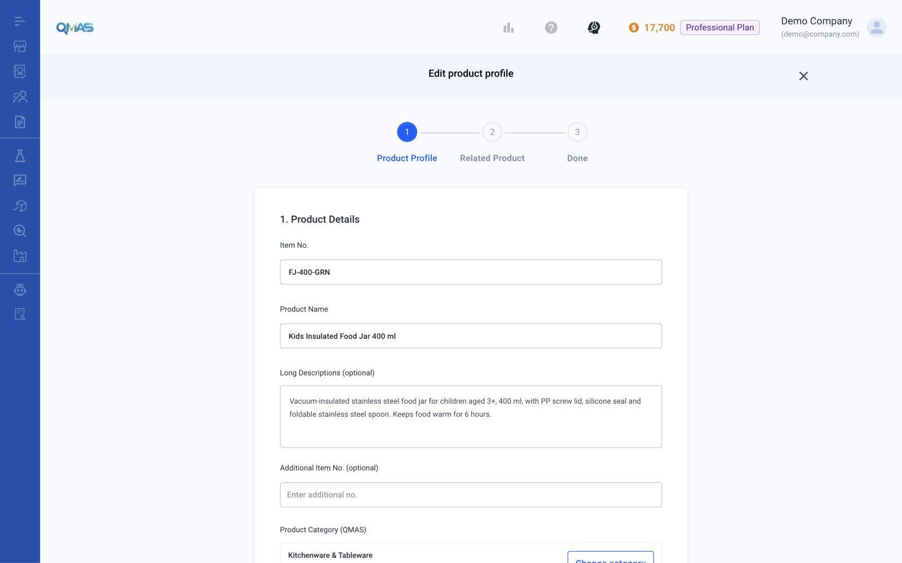
Edit product profile — the same steps as creating a product.
Open the product from the Product Management list, click ⋮ next to the product name, then Edit product.
Can I add many products at once?
Yes. Click Import Product on the Product Management list.
Where do I submit eFiling or add compliance data for a product?
Open the product profile and use CPSC eFiling or Compliance Data in its left menu.
Product Management — Every Tab of the Product Profile
After you create a product, its profile holds everything about it. This guide explains each tab in the profile's left menu and the import option on the product list.
Overview
Document: upload, organise, share and set reminders for the product's files.
Shipping Detail: sizes, weights and barcodes for the selling unit and cartons.
Compliance Data: record test results, certificates and other compliance data.
Quality Requirement: list the product's quality requirements, use templates and send them to testing or document review.
AI Risk Screening: run AI compliance screenings for this product.
CPSC eFiling: submit eFiling for this product and see its eFiling log.
Packaging Detail: record each packaging component, its materials and suppliers.
Shows every file linked to the product. Use New Folder to organise files and Upload to add a file (see the Document Management guide for the upload pop-up). Filter by Type, Source or Checked, switch between All and Archived, and search with Search Files. Sort and Reset sit with those filters.
Document tab with one test report and the filter controls.
Tick one or more files to open the toolbar:
Action
What it does
Set Data
Add compliance data (test, certificate or other) from this file.
Set Dates & Reminder
Set issue, expiry and review dates and an email reminder.
Archive
Move the file to the Archived tab.
Download
Download the file.
Share
Create a share link with an expiry period. Copy it or send it by email.
Rename / Edit Type
Change the file name or document type.
Move
Move the file to a folder.
Remove
Remove the file.
Toolbar after selecting a file.
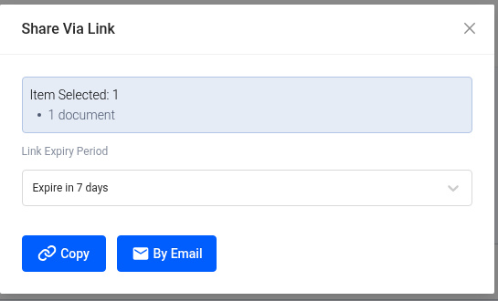
Share Via Link — choose how long the link stays valid, then Copy or By Email.
2. Shipping Detail
Shows the length, width, height, gross and net weight, quantity and barcode for the Selling Unit, Inner Carton and Outer Carton. To change them, click ⋮ next to the product name → Edit product and update Shipping Information.
Shipping Detail tab.
3. Compliance Data
Three sections: Test Data, Certificate Data and Other. Click Add Data (or Add once a section has records).
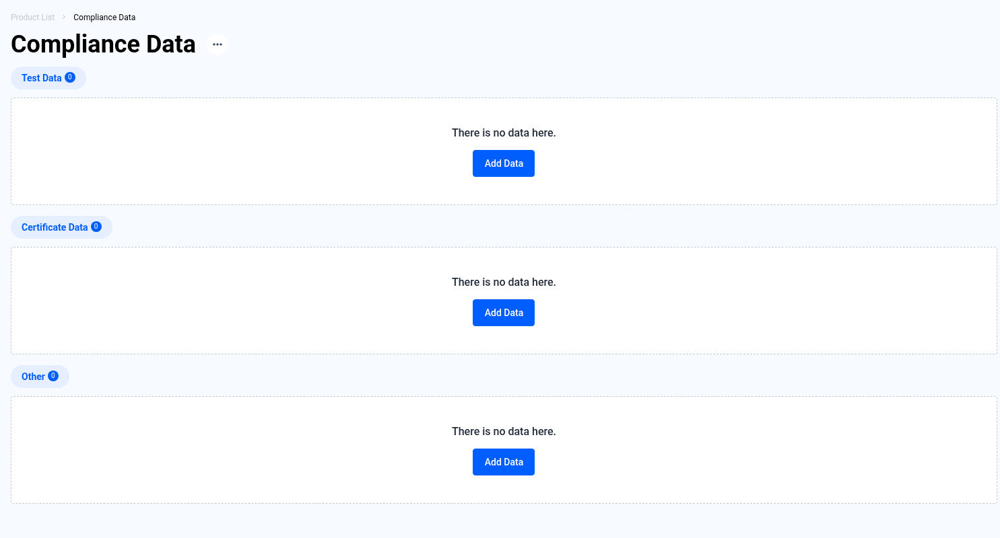
Compliance Data tab before any data is added.
Test Data records one test result:
Result (required): Passed, Failed or Report As Is.
Export Market (required). For US eFiling, choose United States (CPSC eFiling submission).
Legislation, Test Item & Citation (required): type a keyword such as “lead” and pick the test item from the list.
Report ID, Issue Party (required), Expiry Date and Test Date / Report Date.
Link the report under Existing Product Document (a file already on the product) or New Document (upload a new file).
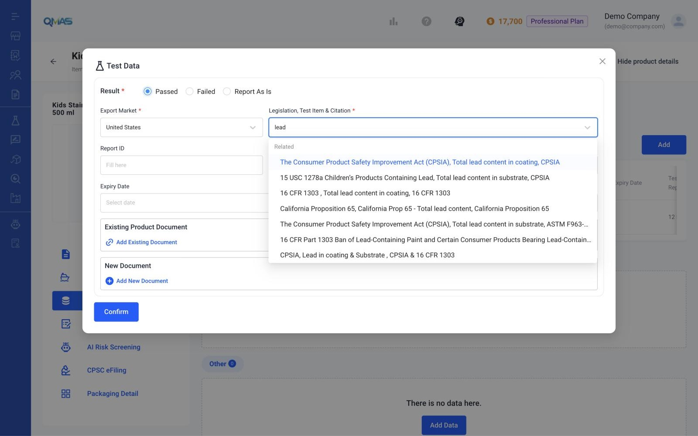
Search legislation and test items by keyword.A completed Test Data record with the report attached.
Click Confirm. QMAS shows “Data Created” and the record appears in the Test Data table with its export market, legislation, test item, citation, report ID and issue party.
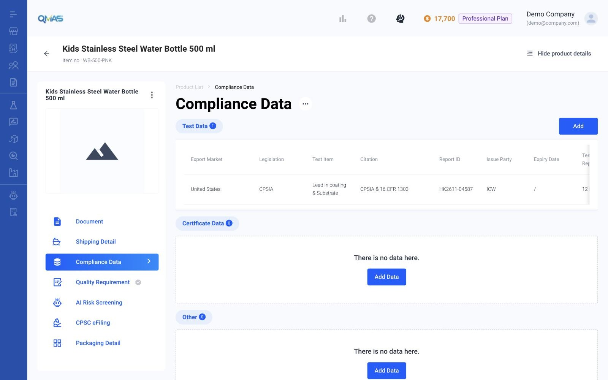
Saved test data.
Certificate Data works the same way. Fill in the certificate Type, Issue Party, Score / Overall Rating, Expiry Date and Certificate Date, then link the certificate file.
Certificate Data form.
4. Quality Requirement
Quality Requirement lists what the product must meet, for example a chemical test or a physical test. Each requirement has a Type (the group) and a Name. You can attach compliance data to a requirement as proof, mark it as completed, and send the requirements to Product Testing or Document Review.
Quality Requirement tab before any requirement is added: Add Requirement, Test Plan and the ⋯ menu.
4a. Add a requirement yourself
Click Add Requirement (or Add at the top right once the list has items).
Type: pick an existing type, or type a new one and choose + Create “…”. Example: *Chemical Testing*.
Name: pick a name from the list for that type, or type a new one and choose + Create “…”. Example: *Lead in Surface Coating (16 CFR 1303)*. Picking a different Type clears the Name.
Tick Mandatory if the requirement must be met, then click Confirm. QMAS shows “Requirement Created”.
Add Requirement with Type, Name and Mandatory filled in.
Requirements are grouped by Type. The number next to the Type is how many requirements it has, and a red * marks a mandatory requirement.
Requirements grouped by Type: Chemical Testing and Physical Testing.
4b. Reuse requirements with templates
Click ⋯ next to the title → Templates:
Option
What it does
Apply Template
Search for a saved template, use View to preview it, then click Apply. All its requirements are added to this product.
Save As Template
Save this product's requirements as a template. Type a new name and choose + Create “…”, then click Confirm. QMAS shows “Template saved”.
Manage Templates
See and manage your saved templates.
⋯ → Templates: Apply Template, Save As Template and Manage Templates.
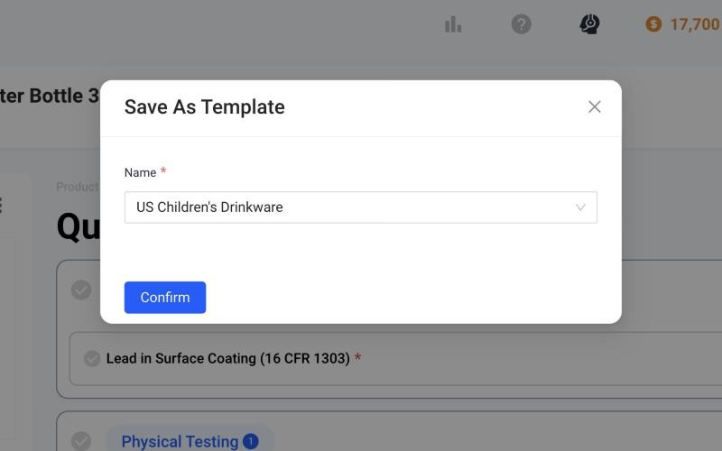
Save As Template — name the template, then click Confirm.
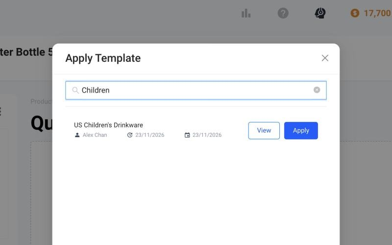
Apply Template — search, View or Apply a saved template.
After you click Apply, QMAS shows “<template name> applied” and the template's requirements appear in the list.
4c. Attach proof and complete a requirement
Click + on a requirement to open Attach Compliance Data. Choose the Test Data, Certificate Data or Other tab, tick the records and click Confirm. QMAS shows “Data Added”. If a record you just added is missing, click Reload Data. To add new data, go to the Compliance Data tab first.
The attached data appears under the requirement. Click ⌄ to expand or collapse it, and the bin icon to detach it.
Click ⋯ on a requirement for Edit, Duplicate, Upload Document, Mark As Completed and Remove.
Mark As Completed shows “Requirement Completed” and turns the requirement’s tick green.
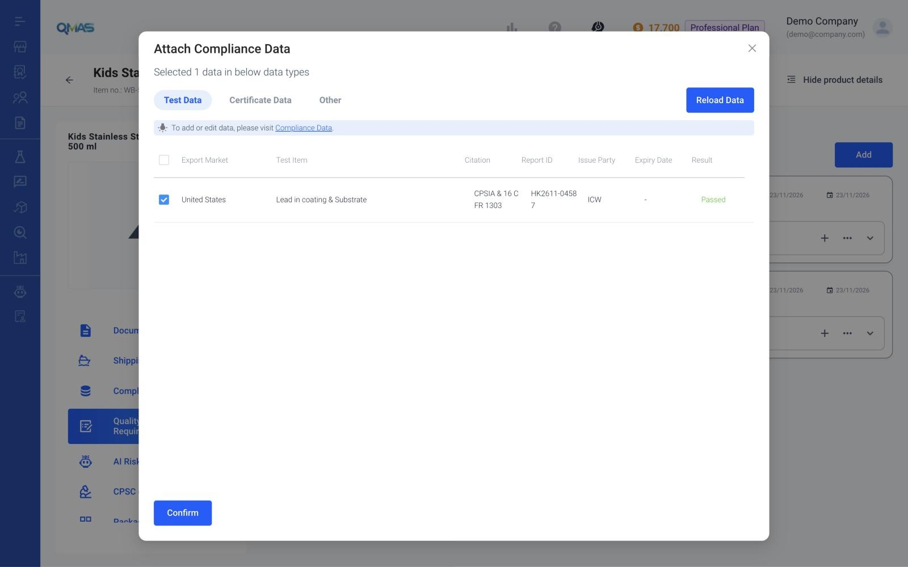
Attach Compliance Data — tick the test record, then click Confirm.The attached test data under the requirement.
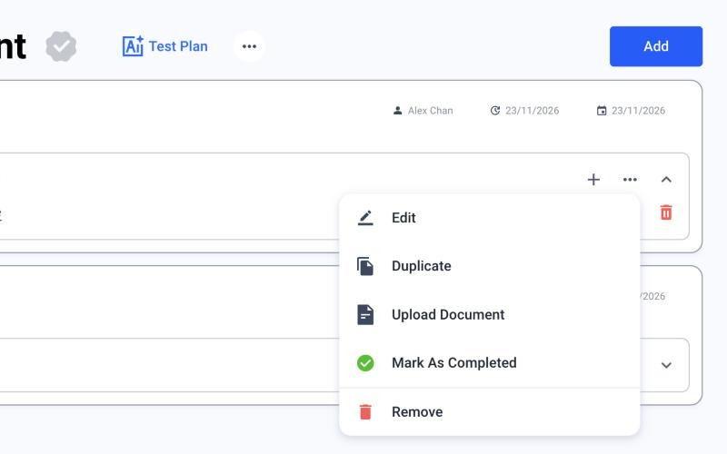
⋯ menu on one requirement.Requirement marked as completed — the ticks turn green.
4d. Send requirements to a job
⋯ → Import To Product Testing: click Select on each requirement (or Select All), then click Confirm to Create Job. Product Testing → Request Quotations opens with this product added, and the requirements appear under Quality Requirement in step 2.
⋯ → Import to Document Review → Create Job or Create Job for supplier: opens the matching Document Review form for this product.
⋯ → Export As Document: exports the requirement list as a document.
Import To Product Testing — select requirements, then Confirm to Create Job.The requirements carried into Product Testing step 2.Import to Document Review → Create Job or Create Job for supplier.
4e. Test Plan (AI)
Click Test Plan to let AI suggest a test plan. Fill in the Product Description (more detail gives better results), Import Country and Product Intended Used By, upload up to 6 product images, then click Generate Test Plan.
Test Plan pop-up.
5. AI Risk Screening
Lists the AI screenings for this product. Click Add to start one. The pop-up and results are explained in the AI Insight guide.
AI Risk Screening tab.
6. CPSC eFiling
Shows the eFiling Log for this product. Click Submit eFiling to create an eFiling. Before you can sync with CPSC, add your API Key and Secret Key in Company Profile (link in the grey note). The full flow is in the eFiling guide.
CPSC eFiling tab.
7. Packaging Detail
Lists the packaging components of the product. Click Create Packaging Component and fill in:
Basic Information: name and description (required), identification no., function, legal role, weight, material type and name, status (Active, Inactive or Draft), and packaging images.
Dimension, Additional Information, Supplier Linkage and Technical Documentation (expand each section).
Click Confirm. Use the Status filter to show active, inactive or draft components.
Packaging Details tab.Create Packaging Component.
8. Import products in bulk
On the Product Management list, click Import Product. Download the ICW Product template (download here), fill it in, upload the Excel file (one file at a time), then click Next. Only the ICW template can be used.
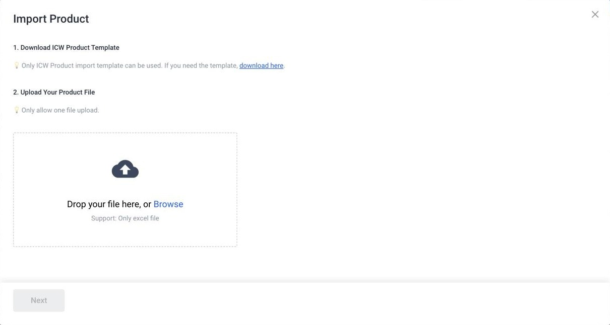
Import Product.
Tips
FAQ
How do I add a test result to a product?
Open the product → Compliance Data → Test Data → Add Data. Fill in Result, Export Market, Legislation/Test Item, Issue Party, link the report, then Confirm.
How do I share a product document?
Open the product → Document, tick the file, click Share, choose the link expiry, then Copy or By Email.
How do I add quality requirements to a product?
Open the product → Quality Requirement → Add Requirement, or ⋯ → Templates to apply a saved template.
Where do I record packaging information?
Open the product → Packaging Detail → Create Packaging Component.
How do I import many products?
On Product Management, click Import Product, download the ICW template, fill it in and upload it.
How do I reuse quality requirements for many products?
Open a product → Quality Requirement → ⋯ → Templates → Save As Template. On other products use ⋯ → Templates → Apply Template.
How do I prove a requirement is met?
On the requirement click +, attach the test or certificate data, then ⋯ → Mark As Completed.
Test Plan — Get an AI Test Plan for a Product
Test Plan uses AI to suggest the tests a product needs, based on its description, import country, intended users and photos. You open it from a product's Quality Requirement tab.
Overview
Open a product and go to Quality Requirement.
Click Test Plan.
Fill in the product information and upload photos.
Set up your CPSC Certifier ID and API keys in Company Profile → CPSC eFiling - Certifier ID.
Step-by-step
1. Open eFiling
In the left menu, open eFiling. The list shows each eFiling with its log no., product, status, certifier ID, collection ID, product ID and version ID. Use View to open one (Edit for a draft) or Duplicate to start a new version from it. Click Add eFiling.
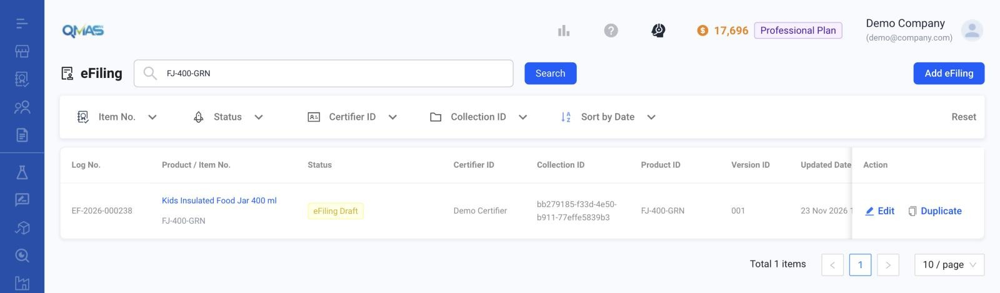
eFiling list, searched by item no., with a saved draft.
2. Add documents for AI Extract
Upload Report & Auto-fill by AI: drop a PDF test report. AI extracts the data and fills the form.
Select Document in QMAS: choose a document already in Document Management, with no re-upload.
Start With Blank: fill the form yourself.
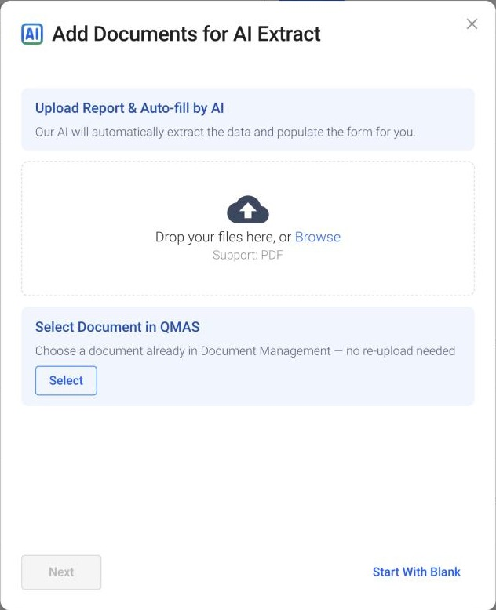
Add Documents for AI Extract.
3. Quick Select eFiling Information
Choose the CPSC Certifier ID and check the products to include. Click Next.
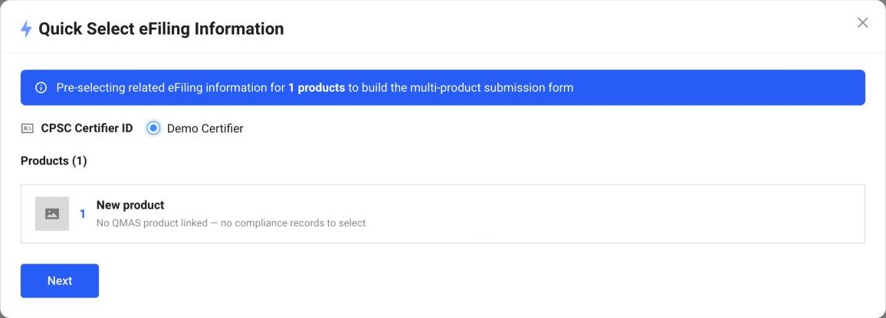
Quick Select eFiling Information.
4. eFiling Submission form
Fill in eFiling Information (Certifier ID, collection, point of contact) and Product Detail. Use Link To QMAS Product to connect the form to a product, or tick Create As New Product. Use + Add Product at the top for a multi-product submission.
Then complete the remaining sections (lab, citations and exclusions). Click Save Draft to finish later, or Preview to Submit to check and send to CPSC.
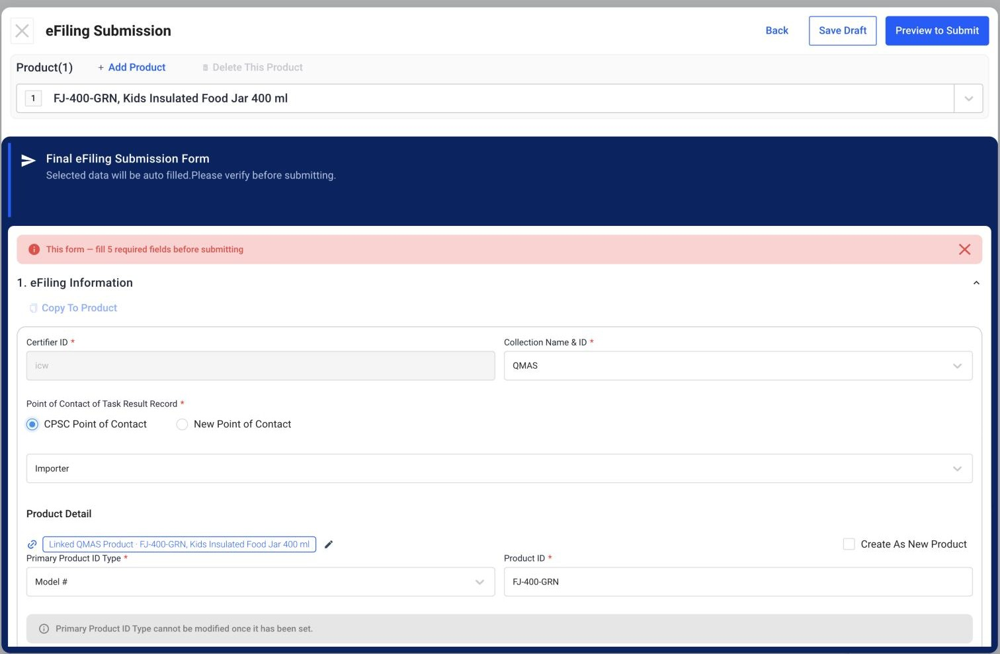
eFiling Submission form linked to a QMAS product.
If you close the form without saving, QMAS asks you to confirm. Unsaved values are lost. Saved drafts stay in the eFiling list.
Tips
FAQ
How do I submit eFiling to CPSC?
Go to eFiling (https://qmas.icw.io/efiling), click Add eFiling, upload a report for AI Extract or Start With Blank, check the Quick Select information, complete the eFiling Submission form, then Preview to Submit.
In the left menu, open Supplier / Factory Management. The Supplier tab lists your suppliers with their location, category, status, connect status and rating.
Click Create Supplier. You can also use Import Supplier to add many suppliers from a file, or Invite Supplier to invite a supplier to connect with you on QMAS.
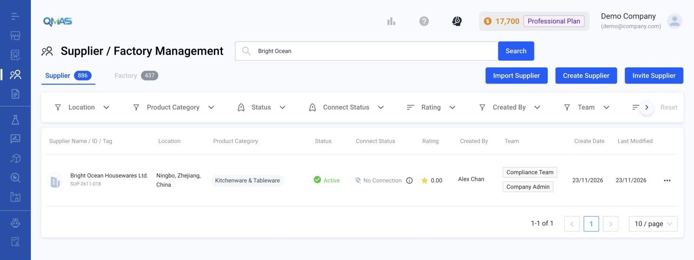
Supplier tab with Import Supplier, Create Supplier and Invite Supplier.
2. Supplier Profile — company overview
Upload Logo (optional).
Supplier ID (optional): your own reference number.
Supplier Name: English name (required) and local-language name (optional).
Location: country or region, then province and city.
Address and Website (optional).
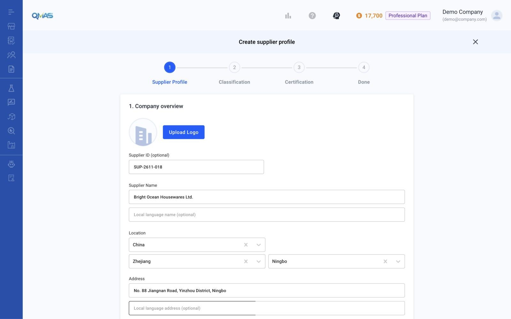
Create supplier profile — step 1, Company overview.
3. Supplier Profile — contact
Under 2. Contact, fill in the Contact person, Contact Email and at least one Email address. For each email address, choose a type: Company, QA, Sales or Other. Click Add email for more. Contact no. is optional.
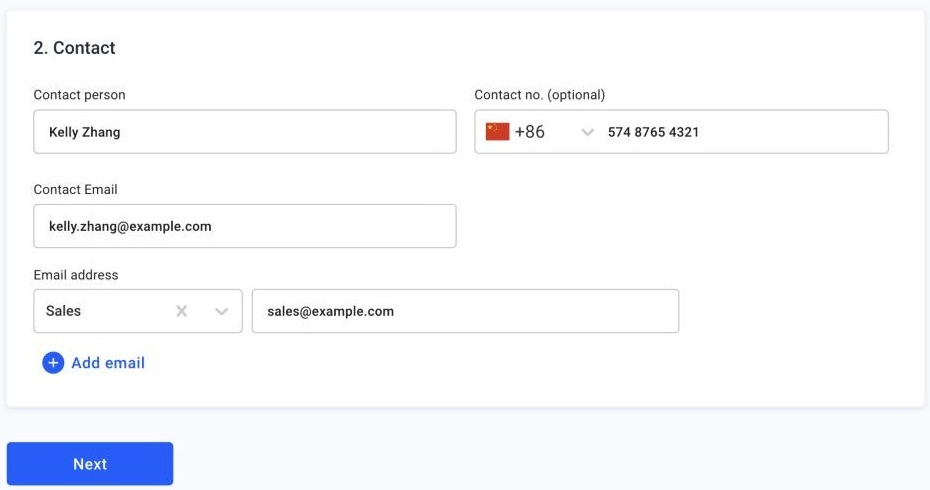
Contact section.
If a required field is empty when you click Next, it turns red, for example “Type is required”, “Email is required”, “English name is required”, “Location is required” or “Contact person is required”.
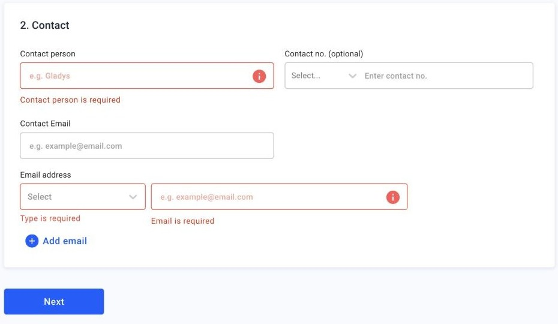
Required fields turn red when you click Next.
4. Classification (optional)
Click Select category to choose the product categories this supplier offers. Click Select tag to add your own tags. Click Next.
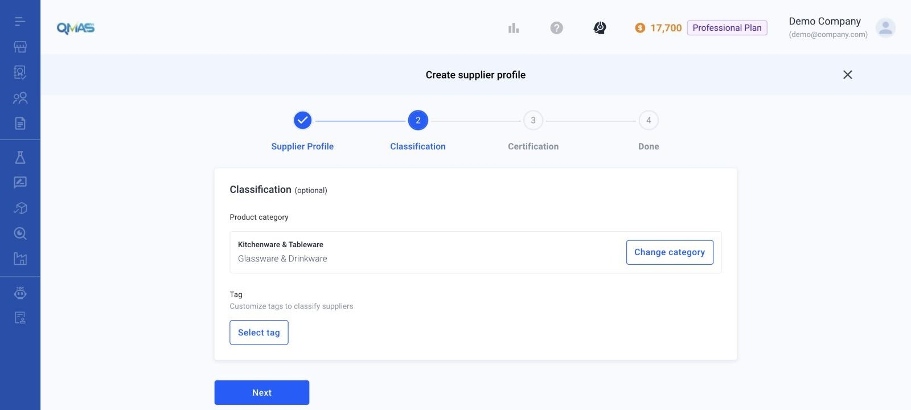
Step 2 Classification.
5. Certification (optional)
Click Add to upload a certificate. Choose the certification type, upload the file, and fill in the rating, issue party and dates. Click Done to create the supplier.
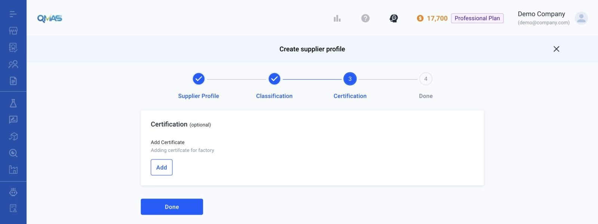
Step 3 Certification — click Add to upload a certificate, or Done.
6. Done — supplier profile
The supplier profile opens. Use the tabs Overview, Product, Factory, Certificate, Document and Compliance Data to manage everything linked to this supplier. Click the pencil icon next to the name, or next to Contact, to edit.
3. Factory Profile — scale and equipment (optional)
Factory Scale: outsource production, total employees, number of workers, factory size (square meters) and annual volume.
The equipment section lists machines and Automation Production Line entries: machine name, brand and model no., quantity and monthly production volume. Click Add for more rows.
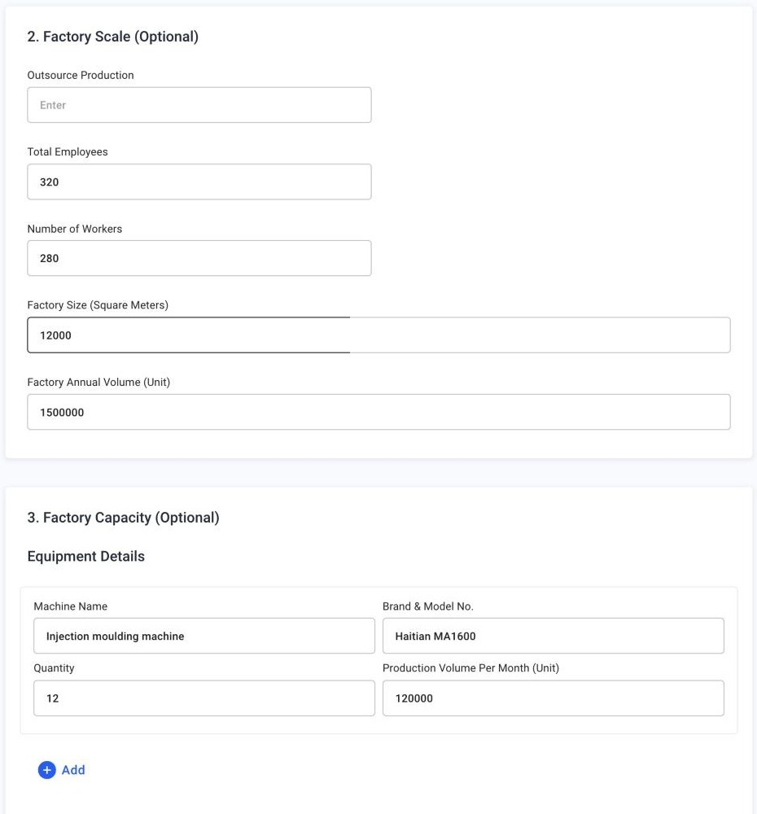
2. Factory Scale and 3. Factory Capacity (both optional).
4. Factory Profile — contact
Under 4. Contact, fill in the Contact person and an Email address with its type (Company, QA, Sales or Other). Contact no. is optional. Click Next.
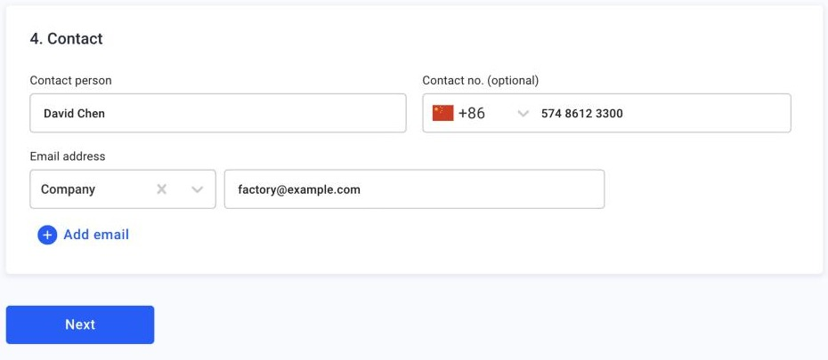
Contact section and Next.
If Contact person or the email type and address are empty, Next marks them as required.
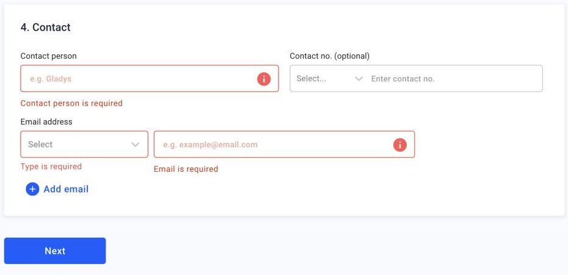
Required fields turn red after you click Next.
5. Classification (optional)
Click Select category for the product categories this factory makes, and Select tag for your own tags. Click Next.
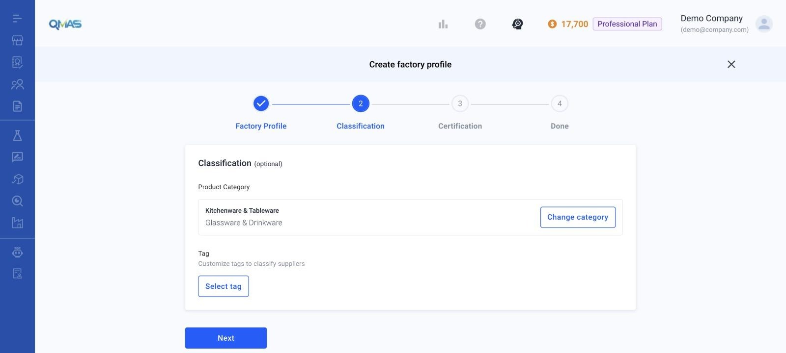
Step 2 Classification.
6. Certification (optional)
Click Add to attach an audit report or certificate. In Add Certification, choose the certification type, upload the file (JPG, JPEG, PNG, PDF, DOC or XLS), and fill in the score or overall rating, issue party, issue date and expiry date. Click Add.
Add Certification pop-up.
Click Done to create the factory.
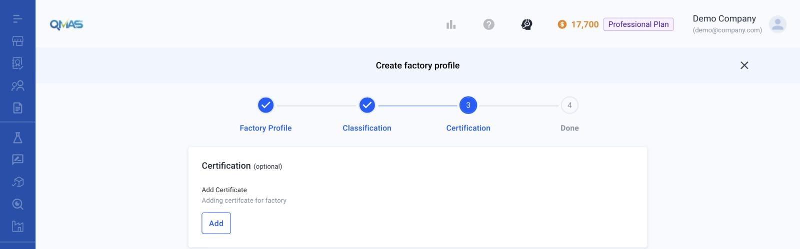
Step 3 Certification — click Add, or Done to create the factory.
7. Done — factory profile
QMAS shows “Create factory successfully!” and opens the factory profile. Use the tabs Overview, Supplier, Certificate, Document and Compliance Data to manage what is linked to this factory.
In the left menu, open Factory Audit. The Jobs tab lists your audit jobs with the factory name and address, audit scheme, creator, team, audit date, date created and job status. Use Audit Scheme, Job Status, Sort by Date, Created By and Team to filter, or search by factory name. Click Reset to clear the filters.
Click Create Factory Audit Order at the top right.
For SEDEX, choose the announcement type (Announced, Semi-announced or Unannounced) and answer Are you SEDEX Member? (Yes, No or Provide Later). If you answer Yes, enter your SEDEX no.
Audit Date: the date you want the audit.
Remarks (optional): anything the auditor should know.
Click Next, or Save Draft to finish later.
3. Factory
1. Factory Info: factory name in English (and the local-language name if you have it), location (country/region, province, city), address and number of employees.
Save To → Dates & Reminder → Compliance Data → Confirm
Step-by-step
1. Open Document Management
In the left menu, open Document Management. The tabs show All, Pending Review, Expired, Archived and Trash documents. Click Upload at the top right and choose your file.
Document Management list with the Upload button.
2. Choose the document type
The Upload Document pop-up shows the file name. Click the pencil icon to rename it. Under Type, type or select a document type, for example Test Report.
Upload Document pop-up.
3. Save To — link the document
On the Save To tab, click Add Supplier, Add Factory or Add Product. Select the items in the pop-up and click Confirm. A document can be linked to several items. Click Remove to unlink one.
The document linked to a product.
4. Dates & Reminder
Set the Issue Date, Expiry Date and Review Date. Under Email Reminder, choose On Expiry Date, On Review Date or Custom to get an email reminder. Add a Note to include in the reminder email. Use Clear All Settings to start again.
Dates & Reminder tab.
5. Compliance Data
Click Edit next to Test Data, Certificate Data or Other to record the details from the document, such as test items and results or certificate numbers.
Compliance Data tab.
6. Confirm
Click Confirm. QMAS shows a success message and the document appears at the top of the list, with its type and the number of linked products, suppliers and factories.
The uploaded document at the top of the list.
Tips
FAQ
How do I upload a document?
Go to Document Management (https://qmas.icw.io/document-management), click Upload, choose the file, set the Type, link it under Save To, then click Confirm.
How do I get a reminder before a document expires?
In the Upload Document pop-up, open Dates & Reminder, set the Expiry Date, then choose an Email Reminder option.
Where can I see expired documents?
Open the Expired tab in Document Management.
QC Inspection — Get a QC Inspection Quote via ICW
Ask ICW to quote and arrange a third-party QC inspection for your products.
Overview
Open QC Inspection, click Create Job, choose Get QC inspection quote via ICW and click Continue.
Inspection Requirement: date, type, level, AQL, budget and provider preference.
Report Details: products and POs to inspect.
Supplier & Factory: who makes the goods and where the inspection takes place.
Additional Information: files and remarks.
Review & Submit: check everything and click Submit.
In the left menu, open QC Inspection. The charts show inspection results, service providers and job types. Tabs list All Job, 3rd Party Job, Inhouse Record and Draft. Click Create Job.
QC Inspection list, searched by job ID, with Create Job.
2. Choose what you are looking for
Option
Use it when
Get QC inspection quote via ICW
You want ICW to arrange a third-party inspector. This guide.
Start internal inspection
Your own QC team will inspect. See the Internal QC Inspection guide.
Add inspection record
The inspection is already done and you want to record the result.
Choose Get QC inspection quote via ICW and click Continue.
Create New Job — Looking to…
3. Inspection Requirement
Inspection Date.
Inspection type: Final Random, Loading, During Production, Re-Inspection, Initial Production, Fabric, 100% or Vendor Own Inspection.
Inspection Level: General Inspection Level I–III or Special Level S-1 to S-4.
Inspection AQL: Critical, Major and Minor levels. They apply to all products in this job by default.
Target Budget (currency and amount) and Service Provider Preference. Leave “No preference, ICW will match you with the best inspector” selected if you have no preferred provider.
Step 1 Inspection Requirement filled in. Click Save to keep a draft, or Next.
4. Report Details
Click Add Product, search for the product, click Select, then Confirm.
Select related product(s) — search by name, item no., supplier or factory.
For each product, fill in the PO details: customer name, customer PO #, PO #, order quantity and number of cartons. Use Add New PO for more POs, Add Product for more products, and Add Report or Duplicate Report if you need separate reports. Tick Signed Sample Available if there is one. Click Next.
Report 1 with one product and its PO.
5. Supplier & Factory
Click Add Supplier and select the supplier. Then click Select Existing Factory and choose the factory where the inspection will take place. Check the contact person, phone and email for each. Click Next.
Supplier and factory selected, with contact details.
6. Additional Information
Upload reference files such as tech packs or previous reports, and write any special requirement in Remark. Click Next.
Step 4 Additional Information.
7. Review & Submit
Check the summary. Click Edit on any section to change it. Click Submit.
Step 5 Review & Submit.
8. Done — job detail
QMAS shows “Create job successfully!” and opens the job. It has a Job ID and starts as Under Review. The Quotes, Reports, Attachments and Invoices tabs follow the job.
The new inspection job, Under Review.
Tips
FAQ
How do I book a third-party QC inspection?
Go to QC Inspection (https://qmas.icw.io/inspection), click Create Job, choose Get QC inspection quote via ICW, then complete the 5 steps and Submit.
What is the difference between a QC inspection quote and an internal inspection?
A quote via ICW uses a third-party inspector arranged by ICW. An internal inspection is done by your own QC team (Internal QC Inspection).
Can I save a QC job and finish it later?
Yes. Click Save on any step. The job is kept on the Draft tab.
Internal QC Inspection — Start an Internal Inspection
Schedule an inspection that your own QC team carries out, without a third-party provider.
Overview
Open Internal QC Inspection and click Create Job. Start internal inspection is already selected. Click Continue.
Inspection Requirement: date, type, level and AQL.
Report Details, Supplier & Factory and Additional Information work the same way as in the QC Inspection quote flow.
Review & Submit: check everything and click Submit.
In the left menu, open Internal QC Inspection. The tabs show All Job, Onsite Job Calendar and Draft. Click Create Job. To add many jobs at once, use Import Job.
Internal QC Inspection list with Import Job and Create Job.
2. Start internal inspection
Start internal inspection is selected. Click Continue.
Create New Job — Start internal inspection selected.
3. Inspection Requirement
Choose the Inspection Date, Inspection type, Inspection Level and the AQL (Critical, Major, Minor). There is no budget or service provider, because your own team does the inspection. Click Next.
Step 1 Inspection Requirement for an internal inspection.
4. Steps 2–5
The next steps are the same as in the QC Inspection quote flow. See the QC Inspection guide for those steps.
Report Details: add products and their POs.
Supplier & Factory: select the supplier and the factory to inspect.
Additional Information: upload reference files and add remarks.
Review & Submit: check the summary, then click Submit. The job opens with its Job ID.
In the left menu, open Document Review. The dashboard shows service providers, jobs over 12 months, status and reject reasons. The tabs All Job, My Job and View Only list the jobs.
Document Review with Create Job and Create Job for supplier.
2. Job Type
Choose the Job Type (for example Document Review) and tick CPC/GCC/DOC Review and/or Compliance Review. Optionally fill in Buyer Name, Service Required (Regular by default) and Submission Remark.
Create Job — 1. Job Type and 2. Product Information.
3. Product Information
Keep Select Product For Review = Yes. Click Existing Product to pick products, or New Product to create one. For each product, check the Basic Information, then fill in Additional Information: Test Age Grade, Label Age Grade, Export Market and Country Of Origin are required.
Basic Information and Additional Information for the selected product.
Below that you can add PO Information, upload Product Pictures & Reference Documents, set the TCF Requests (choose document types or import a TCF template) and add Quality Requirements.
TCF Requests and Requirements.
4. Documents for Review, partner and provider (Flow A)
Under Documents for Review, click Upload files (at least one file is required). The reviewer gives a conclusion only on documents in this section.
Select Partner (optional): choose Yes to let one partner view the job.
Service Provider: choose the connected lab under Connected Provider. Click Confirm.
Documents for Review, Select Partner and Service Provider.
5. Create Job for supplier (Flows B and C)
Click Create Job for supplier. Fill in Job Type and Product Information as above. Then:
Select Connected Supplier: choose the supplier who will upload. Only suppliers connected with you on QMAS are listed. See Supplier Management → Invite Supplier.
Select Partner (optional).
Service Provider: choose Connected Provider and a lab for Flow B, or Job Owner Review for Flow C.
Click Confirm. The supplier gets a notification to upload the documents.
Create Job for Supplier.Select Connected Supplier, Select Partner and Service Provider (Connected Provider or Job Owner Review).
6. Follow the review
Flow A and B: the job shows Being Processed while the lab reviews. The lab concludes each document as Approve, Reject or Waiting for Additional Information.
Flow C: when the supplier has uploaded, open the job, click View detail, and conclude each document yourself with Approve, Reject, N/A or Waiting for additional information. Click Confirm.
If a document is rejected or more information is needed, read the comment and upload a corrected file.
When all documents are approved, complete the job.
Tips
FAQ
How do I send documents to a lab for review?
Go to Document Review (https://qmas.icw.io/document-review), click Create Job, fill in Job Type and Product Information, upload files under Documents for Review, choose the lab under Service Provider, and click Confirm.
How do I ask my supplier to upload documents for review?
Click Create Job for supplier on Document Review, choose the connected supplier, then choose Connected Provider (lab review) or Job Owner Review (you review) and click Confirm.
What does Job Owner Review mean?
You review the supplier's documents yourself instead of a lab.
Why can't I find my supplier in Select Connected Supplier?
Only suppliers connected with you on QMAS are listed. Invite them from Supplier / Factory Management → Invite Supplier.
AI Insight — Run an AI Risk Screening
Upload product photos and let AI identify compliance risks and requirements for your import region. You get a compliance guideline report (PDF).
Overview
Open AI Risk Screening from the left menu (or from a product profile) and click Add.
Upload up to 6 product photos and choose the Import Region and Output Mode.
Click Verify Information (recommended) or Skip Verify & Generate Report.
When the status is Completed, open the report from the list.
Module
AI Insight (shown as “AI Risk Screening” in the QMAS menu)
Tokens. Your balance shows as Available Token in the pop-up.
Step-by-step
1. Open AI Risk Screening
In the left menu, open AI Risk Screening. The list shows every screening with its import region, output mode (Full or Lite), status and upload date. Click Add.
The guide still files this module under AI Insight. The current screen title and address are AI Risk Screening (`/ai-risk-screening`).
AI Risk Screening list.
You can also start from a product: open the product profile, choose AI Risk Screening in its left menu, then click Add.
2. Fill in the screening
Product Page URL (optional): a link to the product page.
Product Images (required): up to 6 photos from different views. PNG, JPEG, JPG, WEBP, GIF, AVIF or HEIC.
Import Region (required): where the product will be sold.
Output Mode (required): Full or Lite report.
Screening Age Grade (optional): the age grade to screen against, for example 3+ or 8+.
Available Token shows your balance.
New AI Risk Screening pop-up.
3. Verify and generate
Click Verify Information (recommended: verification improves accuracy and gives a more reliable report), or Skip Verify & Generate Report to go straight to the report.
The new screening appears in the list. When its status is Completed, the report is ready. Click the ⓘ icon to see the screening details.
Tips
FAQ
How do I run an AI risk screening / AI Insight?
Go to AI Risk Screening (https://qmas.icw.io/ai-risk-screening), click Add, upload product photos, choose Import Region and Output Mode, then click Verify Information or Skip Verify & Generate Report.
Where do I see my token balance?
In the AI Risk Screening pop-up, under Available Token.
What is the difference between Full and Lite?
They are the two report output modes. Choose one in Output Mode when you add a screening.